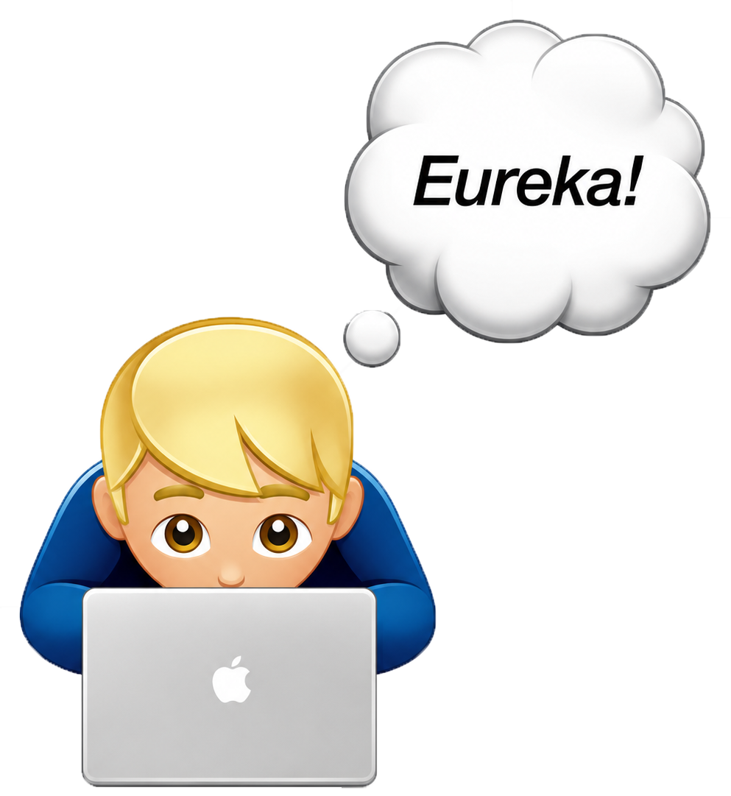
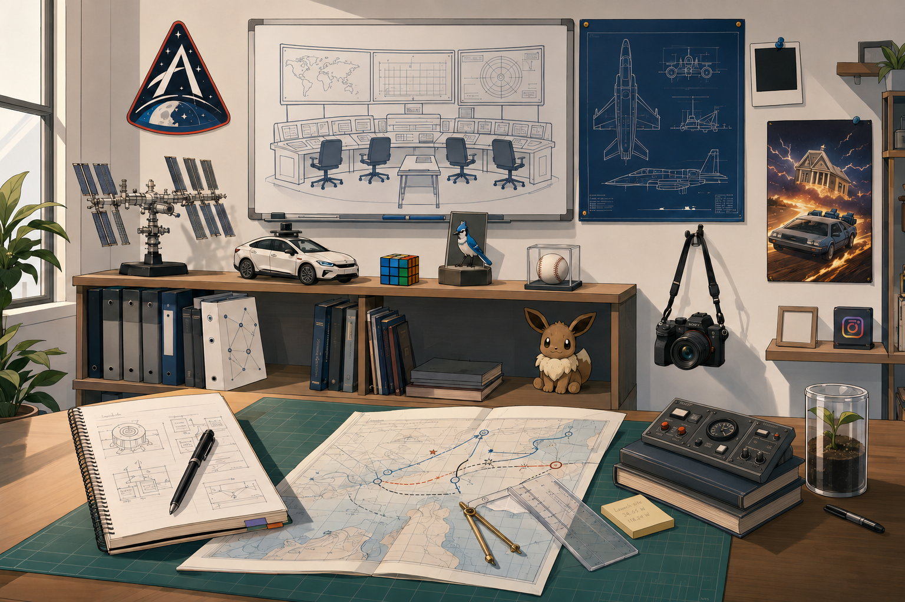

JACKSON MURRAY
HUMAN-CENTERED DESIGN STRATEGIST
PORTFOLIO
RESEARCH
ABOUT ME
RESUME
SOUND ON

Hover an artifact or use the experience index.
INCOMING CALL
JACKSON MURRAY
QUICK LAB ORIENTATION · ~30 SEC
ANSWER
SKIP
CALL CONNECTED
JACKSON / PORTFOLIO
1 / 4
00:00